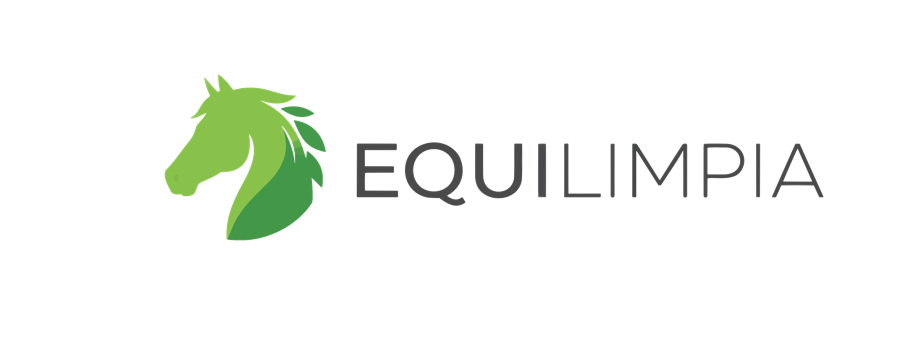

Equilimpia
Aspiración, triturado y esparcido de residuos ecuestres en una sola máquina.
- Limpieza de boxes en 2-3 horas en vez de 6-8
- Reduce amoníaco, plagas y olores
- Devuelve el residuo al campo como abono
Diseñamos y fabricamos maquinaria agromecánica que transforma la gestión de residuos orgánicos en tiempo, salud y rentabilidad — para el sector ecuestre y para espacios verdes.
SINC Maquinarias es una pyme familiar argentina, con base en Las Parejas, Santa Fe, dedicada a diseñar y fabricar maquinaria para la gestión de residuos orgánicos en el agro y en espacios verdes. Nacimos de la mano de un socio estratégico del sector ecuestre que necesitaba una solución real para un problema que nadie resolvía: la limpieza manual e intensiva de boxes y establos.
De ese trabajo conjunto surgió Equilimpia, y más adelante, aplicando la misma filosofía de robustez, nació el Biorecolector 4500 para la gestión de residuos vegetales en parques, municipios y espacios verdes.
No somos una empresa que busca maximizar el volumen de ventas. Diseñamos máquinas para resolver problemas complejos de forma robusta, pensadas para quienes valoran la calidad y el resultado por sobre el precio.
Componentes sobredimensionados para trabajar en los ambientes más exigentes del campo.
Transformamos el residuo en recurso: compost y fertilización natural del suelo.
Nuestras máquinas se desarrollan junto a productores reales, no de escritorio.
Somos familia primero: garantía de fábrica, repuestos y service en español.
"Hoy no operaríamos sin Equilimpia. Es una inversión que paga dividendos todas las semanas."
Cada máquina integra en una sola unidad procesos que normalmente requieren varias herramientas y mucho más tiempo de trabajo manual.
Aspiración, triturado y esparcido de residuos ecuestres en una sola máquina.

Recolección, triturado y almacenamiento de residuos vegetales para parques y espacios verdes.

Máquina combinada remolcable por tractor que integra, por primera vez en el país, succión + trituración + esparcido de residuos ecuestres en una sola unidad. Patente en trámite.
Turbina centrífuga de alto rendimiento con manguera de 8" (200 mm) que aspira el residuo directamente del box, sin contacto manual.
El material se almacena en una tolva hermética de 5,5 m³ (hasta 500 kg), evitando el manipuleo directo.
Rotores traseros con púas desmenuzan y dispersan el material de forma radial y uniforme, como fertilizante.
de limpieza diaria, en vez de 6-8 horas manuales
operario en vez de 2-3 para la misma tarea
y plagas: mejora la sanidad respiratoria de los caballos
de liberación de nutrientes al aplicar el abono en el campo
Aplicaciones: haras y studs, canchas de polo, centros de adiestramiento y establecimientos ecuestres escolares — y, por adaptación de ingeniería, también tambos lecheros.
Estamos preparando material audiovisual real de esta máquina trabajando en campo.
Máquina chupadora de hojas y residuos vegetales con trituración y almacenamiento integrados, pensada para parques, municipios, viveros y empresas de paisajismo. Una sola máquina, dos modos de uso: motor autónomo o acoplada a tractor.
Turbina centrífuga con manguera de 4-5" (100-125 mm) y caudal de aire de 1000-1500 m³/hora.
Rodillo interno con cuchillas que reduce el volumen de 5 a 7 veces en una tolva de 450-550 litros (hasta 300 kg).
Compuerta tipo guillotina con descarga controlada por gravedad, lista para compostar.
menos tiempo de limpieza por hectárea
solo operador, en vez de 2-3
reducción del volumen del residuo
del material queda listo para compost
Aplicaciones: municipios y espacios verdes públicos, empresas de paisajismo y jardinería, parques y clubes privados, viveros y centros de jardinería, instituciones (escuelas, hospitales, universidades).
Video real, sin edición, de la máquina trabajando en campo.
Estos son escenarios típicos de aplicación según el sector y la escala del establecimiento, construidos a partir de nuestra experiencia de desarrollo e implementación.
Reducción notable de moscas en pocas semanas al eliminar la acumulación de residuos, con menor gasto en insecticidas.
Adaptación de la ingeniería de Equilimpia para estiércol bovino, con ciclos de cama más largos y mejor manejo sanitario.
Dos unidades de Biorecolector 4500 con motor autónomo para el mantenimiento de parques y plazas.
El tiempo de limpieza por propiedad baja drásticamente, permitiendo atender muchas más propiedades con el mismo personal.
Se libera espacio de acopio y se acelera el compostaje al procesar el residuo en el momento, sin apilarlo.
Socio estratégico en el desarrollo de Equilimpia. Caso real y verificable, con reducción de horas de trabajo y compost reutilizable mensual.
Los escenarios de centro ecuestre, tambo, municipio, paisajismo y vivero son ejemplos ilustrativos de aplicación construidos sobre situaciones operativas reales del sector, no testimonios de clientes con nombre y apellido. El caso de Haras Los Turfistas corresponde a nuestro socio estratégico fundacional en el desarrollo de Equilimpia.
Equilimpia es la única máquina del país que integra succión, trituración y esparcido en una sola unidad para uso ecuestre. Patente en trámite.
Componentes críticos sobredimensionados hasta un 40% por encima del régimen nominal, para trabajar en los ambientes más exigentes.
Terminación epoxi + poliuretánico en toda la estructura, pensada para la intemperie y el uso intensivo.
Ingeniería, service y repuestos en español, con stock permanente y sin depender de importaciones.
Cada máquina se desarrolla junto a clientes reales del sector, no en un escritorio.
Cerramos el ciclo de nutrientes: menos fertilizante químico, más compost y suelos más sanos.
Contanos tu caso y te asesoramos sin compromiso. Respondemos por WhatsApp.